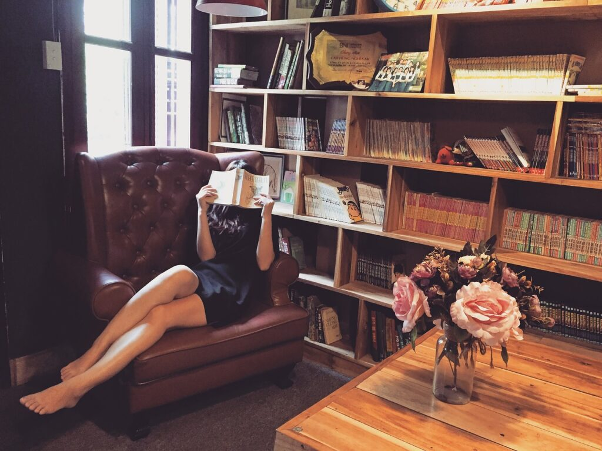

Jesień to czas, kiedy dni stają się krótsze, a temperatura na zewnątrz zaczyna spadać. To także idealny moment, aby wprowadzić do naszego wnętrza trochę ciepła i przytulności. Jako architekt, wiem, jak ważne jest to, aby nasze domy były nie tylko funkcjonalne, ale także przyjazne i komfortowe. W dzisiejszym wpisie chciałabym podzielić się z Wami kilkoma prostymi sposobami na to, jak za pomocą jesiennych dodatków i dekoracji możemy zmienić atmosferę naszego domu.
Dodaj ciepłe kolory i przytulne dodatki

Ciepłe, ziemiste odcienie, takie jak cynamon, burgund czy musztardowa żółć, będą idealnie pasować do jesiennej pory roku. Można je wprowadzić na wiele sposobów, na przykład poprzez zmianę zasłon, poduszek, narzuty na łóżko czy dywanu. Warto także zainwestować w kilka dodatków, które będą w stanie stworzyć ciepłą i przyjazną atmosferę. Miękkie, pluszowe koce, którymi można się otulić podczas chłodnych wieczorów, są świetnym wyborem. Dodatkowo, warto pomyśleć o kilku dekoracjach, takich jak lampiony, świece czy suszone liście.
Rośliny doniczkowe jako dodatek
Rośliny doniczkowe to kolejny świetny sposób na wprowadzenie jesiennej atmosfery do wnętrza. Nie tylko oczyszczają powietrze, ale także dodają życia i koloru do pomieszczeń. Jesienią warto postawić na rośliny o ciepłych kolorach, takie jak złote storczyki czy czerwone begonie. Można także pomyśleć o roślinach o ciekawych kształtach liści, takich jak monstery czy syngonium.
Wykorzystaj tekstury i wzory
Jesień to czas, który inspiruje do zabawy z bogatymi teksturami i unikatowymi wzorami, aby stworzyć ciepłe i przytulne wnętrze. Wełniane dywany i pledy z frędzlami mogą nadać przestrzeni miękkość i komfort, podczas gdy meble z pikowanym obiciem dodają wnętrzu odrobinę luksusu i elegancji. Warto także eksperymentować z materiałami o różnej fakturze, takimi jak aksamit, welur czy lny, które są idealne na chłodniejsze miesiące. Wzory z motywami jesiennymi, jak liście, szyszki czy ptaki migrujące na południe, mogą przynieść kawałek natury do wnętrza i stworzyć atmosferę bliskości z przyrodą. Nie zapomnij również o dywanach z geometrycznymi wzorami czy zasłonach w ciepłych kolorach, które mogą podkreślić charakter jesiennego wnętrza. Pamiętaj, że kluczem jest odwaga w eksperymentowaniu i tworzeniu unikalnych kombinacji, które odzwierciedlają Twoją osobowość i styl.
Trzy elementy, które sprawią, że jesienne wnętrze będzie jeszcze bardziej przytulne:
- Materiały o różnej fakturze: Zadbaj o to, aby w przestrzeni znalazły się różne materiały, takie jak welur, wełna czy bawełna. Połączenie ich faktur sprawi, że wnętrze będzie bardziej ciepłe i przyjemne.
- Elementy inspirowane naturą: Dodaj do wnętrza elementy, które przypominają o jesieni, takie jak suszone gałązki, orzechy czy dynie. Nie tylko będą one ciekawym akcentem dekoracyjnym, ale także pozwolą Ci poczuć się bliżej natury.
- Ciepłe oświetlenie: Zadbaj o to, aby w Twoim domu dominowało ciepłe, miękkie światło. Lampy stołowe z żarówkami emitującymi ciepłe światło czy świece mogą całkowicie zmienić atmosferę wnętrza.
Świeczki zapachowe jako dopełnienie całości
Nie można zapomnieć o jednym z najważniejszych elementów jesiennego wnętrza – zapachach. Świeczki zapachowe są idealnym rozwiązaniem, które nie tylko dodadzą ciepła, ale także wypełnią przestrzeń przyjemnym aromatem. Zapach cynamonu, wanilii, jabłka czy dyni doskonale wpisuje się w jesienną atmosferę i sprawia, że wnętrze staje się jeszcze bardziej przytulne.
Mam nadzieję, że te kilka prostych wskazówek pomoże Wam stworzyć przytulne i ciepłe wnętrze, które będzie idealnym miejscem na spędzanie jesiennych wieczorów.